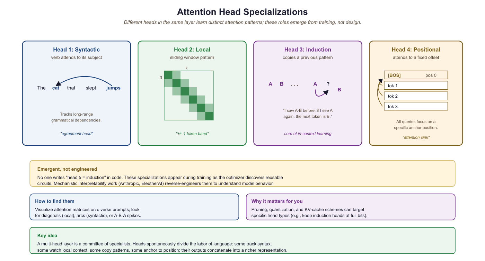
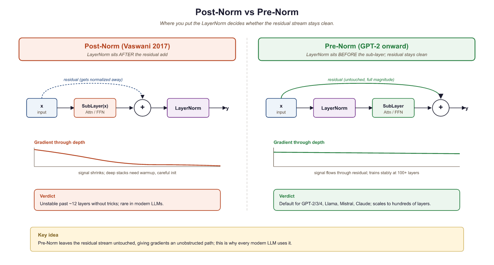

They asked me to scale attention to a million tokens. I implemented FlashAttention. They asked for ten million. I implemented Ring Attention. They asked for a hundred million. I implemented retirement.
Attn, Memory-Bound AI Agent
This section continues from Section 3.5, which covered the three architectural families and positional encoding variants. Here we turn to the practical machinery that makes Transformers tractable at scale: efficient attention mechanisms (sparse, linear, FlashAttention, GQA/MQA, Differential Attention), why multiple attention heads matter, and where to place LayerNorm. Pre-Norm with RMSNorm is the configuration every modern frontier LLM uses, for reasons this section makes precise.
Prerequisites
This section continues from Section 3.5. Familiarity with the architectural families and positional encoding survey there is assumed, along with the attention mechanism from Section 3.1 and the from-scratch Transformer build in Section 3.3.
Having mapped the Transformer family tree and the positional-encoding design space in Section 3.5, we now turn to the components that determine whether a Transformer can actually run at long contexts and at scale: how attention is made efficient, why multiple heads matter, and where to place LayerNorm.
3.5.3 Efficient Attention Mechanisms
Standard attention has $O(T^{2})$ time and memory complexity, where $T$ is the sequence length. For $T = 128\text{K}$ (a common context window in 2024+ models), the naive attention matrix would be $128\text{K} \times 128\text{K} = 16$ billion entries per head. This section surveys the main approaches to making attention tractable at long sequences.
3.5.3.1 Sparse Attention
Instead of attending to all positions, sparse attention restricts each token to attend to a carefully chosen subset of positions. The challenge is choosing which positions to attend to while preserving the model's ability to capture long-range dependencies.
- Local/Sliding Window Attention: Each token attends only to its neighbors within a fixed window of size $w$. Complexity becomes $O(T \times w)$. Used in Longformer and Mistral (window size 4096).
- Strided/Dilated Attention: In addition to local attention, some heads attend to every $k$-th position (dilated pattern), covering longer ranges with fewer computations. Used in BigBird and Sparse Transformer.
- Global Tokens: A small set of tokens (typically [CLS] or special sentinel tokens) attend to and are attended by all other tokens, serving as information hubs. This restores the ability to propagate information across the full sequence.
Mistral 7B uses a sliding window of 4096 tokens. Because information propagates through attention layers, a model with $N$ layers and window size $w$ can theoretically propagate information across $N \times w$ positions. With 32 layers and w=4096, that is 131,072 positions of effective reach.
The sparse-attention literature is large but converges on four primitive patterns; every real system (Longformer, BigBird, Sparse Transformer, Mistral, GPT-NeoX) is built by combining two or three of them. The ASCII sketch below shows the score matrix (rows = queries, columns = keys) for a 12-token sequence under each pattern; X marks a position the query is allowed to attend to.
Full quadratic Sliding window (w=3) Dilated sliding (w=3, stride=2) Global tokens (cols 0, 5)
q\k 0 1 2 3 4 5 6 7 8 9 q\k 0 1 2 3 4 5 6 7 8 9 q\k 0 1 2 3 4 5 6 7 8 9 q\k 0 1 2 3 4 5 6 7 8 9
0 X X X X X X X X X X 0 X X . . . . . . . . 0 X . X . X . . . . . 0 X . . . . X . . . .
1 X X X X X X X X X X 1 X X X . . . . . . . 1 X X . X . X . . . . 1 X X . . . X . . . .
2 X X X X X X X X X X 2 X X X X . . . . . . 2 X X X . X . X . . . 2 X . X . . X . . . .
3 X X X X X X X X X X 3 . X X X X . . . . . 3 X X X X . X . X . . 3 X . . X . X . . . .
4 X X X X X X X X X X 4 . . X X X X . . . . 4 . X X X X . X . X . 4 X . . . X X . . . .
5 X X X X X X X X X X 5 . . . X X X X . . . 5 . . X X X X . X . X 5 X X X X X X X X X X
6 X X X X X X X X X X 6 . . . . X X X X . . 6 . . . X X X X . X . 6 X . . . . X X . . .
7 X X X X X X X X X X 7 . . . . . X X X X . 7 . . . . X X X X . X 7 X . . . . X . X . .
Time/memory: O(T^2) Time/memory: O(T * w) Time/memory: O(T * w) Time: O(T * g) with g global anchors
Architectures combine these. Longformer (Beltagy et al., 2020) uses sliding window plus a handful of pre-designated global tokens (typically [CLS] for classification or question tokens for QA). BigBird (Zaheer et al., NeurIPS 2020) layers sliding window, global tokens, and a small number of random keys per query so that the resulting attention graph remains an expander on which a constant number of layers can route information between any two positions. Sparse Transformer (Child et al., 2019) factorizes attention into local plus strided heads. Mistral 7B (Jiang et al., 2023) uses pure sliding window and relies on layer-by-layer propagation (an $N$-layer stack with window $w$ has receptive field $N \cdot w$, as in the previous callout). The random-keys ingredient from BigBird is the least obvious one: it costs almost nothing computationally and provably restores the universality guarantees that pure local attention lacks, which is why most full-attention-replacement systems include a small random component as insurance.
3.5.3.2 Linear Attention
Linear attention replaces the softmax kernel with a decomposable kernel function, allowing the attention computation to be rewritten in O(T) time:
The trick is to compute $\phi (K)^{T}V$ first (a $d \times d$ matrix, independent of T), then multiply by $\phi (Q)$. The feature map $\phi$ can be the identity (giving a simple outer-product formulation), an exponential, or a random feature approximation. Linear attention has seen renewed interest through architectures like RWKV and RetNet (discussed below).
3.5.3.3 FlashAttention
FlashAttention (Dao et al., 2022) is not an approximation; it computes exact standard attention but with dramatically better hardware utilization. The key insight is that the standard attention implementation is memory-bound: it writes the full T × T attention matrix to GPU global memory (HBM), reads it back for the softmax, writes it again, and reads it for the value multiplication. FlashAttention fuses these operations into a single kernel that keeps the attention matrix in fast on-chip SRAM, never materializing the full T × T matrix in HBM.
The result: 2 to 4x wall-clock speedup and dramatically reduced memory usage (from $O(T^{2})$ to $O(T)$ HBM). FlashAttention-2 further optimizes the kernel with better work partitioning across GPU thread blocks. FlashAttention-3 (2024) leverages Hopper GPU features (warp specialization, FP8 tensor cores) for additional gains. We cover the algorithm in detail in Section 3.6.
# Drop-in FlashAttention via PyTorch SDPA (selects the FlashAttention kernel
# automatically when the hardware and dtypes are compatible). No math change,
# just a call into the fused kernel that the figure above describes.
import torch
import torch.nn.functional as F
torch.manual_seed(0)
B, H, T, D = 4, 16, 4096, 64 # batch, heads, seq, head_dim
q = torch.randn(B, H, T, D, device="cuda", dtype=torch.bfloat16)
k = torch.randn_like(q)
v = torch.randn_like(q)
# Hint PyTorch to use the FlashAttention backend (PyTorch 2.2+).
with torch.backends.cuda.sdp_kernel(enable_flash=True, enable_math=False,
enable_mem_efficient=False):
out = F.scaled_dot_product_attention(q, k, v, is_causal=True)
print("output shape:", out.shape) # (B, H, T, D)
print("peak GPU mem MB:",
torch.cuda.max_memory_allocated() / 1e6) # O(T) not O(T^2)
Code Fragment 3.5.2a: Calling FlashAttention through PyTorch's scaled_dot_product_attention with the Flash backend selected. The arithmetic result matches naive attention exactly; only the kernel changes. At T = 4096 this typically cuts peak attention memory from hundreds of megabytes to tens.
output shape: torch.Size([4, 16, 4096, 64]) peak GPU mem MB: 268.4
Consider attention on a single head with sequence length $T = 8192$ and head dimension $D = 64$ in FP16. The textbook implementation materializes the $T \times T$ attention-score matrix in HBM, costing $8192 \times 8192 \times 2$ bytes = 128 MB of HBM traffic per head per layer. A 32-layer, 32-head model therefore moves $128 \text{ MB} \times 32 \times 32 \approx 128 \text{ GB}$ of attention scores through HBM for a single forward pass. FlashAttention avoids the full materialization: tile sizes $B_r = B_c = 128$ in SRAM mean each Q tile sees each K, V tile exactly once, giving HBM traffic of roughly $O(T \cdot D)$ per head: just a few megabytes. The arithmetic is identical (numerically equivalent to the naive softmax thanks to the online-softmax trick), but the GPU spends time computing instead of waiting on HBM, which is why the wall-clock speedup is 2 to 4x in practice and grows with sequence length.
3.5.3.4 Multi-Query Attention (MQA) and Grouped-Query Attention (GQA)
During auto-regressive inference, the keys and values from all previous positions are cached (the "KV cache"), a technique we examine in detail in Section 9.3: Memory Optimization. With standard multi-head attention and many heads, this cache becomes enormous.
- Multi-Query Attention (MQA) (Shazeer, 2019): All heads share a single set of keys and values. Only the queries differ per head. This reduces the KV cache by a factor of $h$ (the number of heads).
- Grouped-Query Attention (GQA) (Ainslie et al., 2023): A compromise where heads are divided into groups, and each group shares one set of keys and values. With $h=32$ heads and $g=8$ groups, the KV cache is reduced by 4x. Used in Llama-2, Mistral, and Gemma. For a survey of which production models use GQA, see Section 7.3.
In Hugging Face transformers, MQA is just GQA with num_key_value_heads=1, so the same config switch flips a model between the three regimes:
from transformers import AutoConfig, AutoModelForCausalLM
# Falcon-7B ships with MQA: 71 query heads share a single (K, V) pair.
cfg = AutoConfig.from_pretrained("tiiuae/falcon-7b")
print(cfg.num_attention_heads, cfg.num_kv_heads)
# 71 1 -> Multi-Query Attention
# Switch the same architecture to GQA (8 KV heads) or MHA (n_kv == n_q)
# by editing one line of the config before instantiation.
cfg.num_kv_heads = 1 # MQA (Falcon, PaLM default)
# cfg.num_kv_heads = 8 # GQA (Llama-2 70B, Mistral)
# cfg.num_kv_heads = cfg.num_attention_heads # full MHA
model = AutoModelForCausalLM.from_config(cfg)
Code Fragment 3.5.2b: MQA, GQA, and MHA are exposed as a single integer in modern HuggingFace configs. Falcon-7B is the canonical MQA reference: 71 query heads but only one shared $(K, V)$ head, which cuts inference-time KV cache by 71x compared to full multi-head attention at the cost of about one perplexity point.
71 1
Algorithm: Generalized grouped attention (parameterized by g)
Input: X in R^{B x T x d_model}, n_q query heads, n_kv key/value heads with
n_q mod n_kv == 0 and group size g = n_q / n_kv
Output: Y in R^{B x T x d_model}
// Projections: queries have full rank, KV is shared in groups
Q := X @ W_Q // (B, T, n_q, d_k)
K := X @ W_K // (B, T, n_kv, d_k)
V := X @ W_V // (B, T, n_kv, d_k)
// Broadcast each KV head over its group of g queries
K_full := repeat_interleave(K, g, axis = 'head') // (B, T, n_q, d_k)
V_full := repeat_interleave(V, g, axis = 'head') // (B, T, n_q, d_k)
// Per-head scaled-dot-product attention (Algorithm 3.1.1) using K_full, V_full
Y := concat_heads( SoftmaxAttention(Q_h, K_full_h, V_full_h) for h in 1..n_q ) @ W_O
Return Y
Specializations:
n_kv = n_q (g = 1) => MHA (standard multi-head attention)
n_kv = n_q / g (1 < g) => GQA (LLaMA-2 70B uses n_q=64, n_kv=8, g=8)
n_kv = 1 (g = n_q) => MQA (PaLM, Falcon)
KV cache per token (FP16): 2 * n_kv * d_k * 2 bytes
MHA (n_q=32, d_k=128): 16,384 bytes/token (baseline)
GQA (n_kv=8): 4,096 bytes/token (4x reduction)
MQA (n_kv=1): 512 bytes/token (32x reduction)Sources: Shazeer, "Fast Transformer Decoding: One Write-Head Is All You Need" (arXiv:1911.02150, 2019) for MQA; Ainslie et al., "GQA: Training Generalized Multi-Query Transformer Models from Multi-Head Checkpoints" (arXiv:2305.13245, 2023) for GQA. The same kernel implements all three by varying a single parameter (n_kv), which is why production inference stacks treat them as one fused op.
from torch import nn
import torch
# Grouped-Query Attention (GQA): multiple query heads share fewer KV heads.
# Reduces KV cache size while retaining most of multi-head attention quality.
class GroupedQueryAttention(nn.Module):
"""GQA: groups of query heads share KV heads."""
def __init__(self, d_model, n_heads, n_kv_heads):
super().__init__()
self.n_heads = n_heads
self.n_kv_heads = n_kv_heads
self.n_rep = n_heads // n_kv_heads # how many Q heads per KV head
self.d_k = d_model // n_heads
self.W_q = nn.Linear(d_model, n_heads * self.d_k, bias=False)
self.W_k = nn.Linear(d_model, n_kv_heads * self.d_k, bias=False)
self.W_v = nn.Linear(d_model, n_kv_heads * self.d_k, bias=False)
self.W_o = nn.Linear(d_model, d_model, bias=False)
# Forward pass: define computation graph
def forward(self, x, mask=None):
B, T, _ = x.shape
q = self.W_q(x).view(B, T, self.n_heads, self.d_k).transpose(1, 2)
k = self.W_k(x).view(B, T, self.n_kv_heads, self.d_k).transpose(1, 2)
v = self.W_v(x).view(B, T, self.n_kv_heads, self.d_k).transpose(1, 2)
# Repeat KV heads to match the number of query heads
# (B, n_kv_heads, T, d_k) -> (B, n_heads, T, d_k)
k = k.repeat_interleave(self.n_rep, dim=1)
v = v.repeat_interleave(self.n_rep, dim=1)
scores = (q @ k.transpose(-2, -1)) / (self.d_k ** 0.5)
if mask is not None:
# Mask future positions with -inf so softmax ignores them
scores = scores.masked_fill(mask == 0, float('-inf'))
# Convert scores to attention weights (probabilities summing to 1)
attn = torch.softmax(scores, dim=-1)
out = (attn @ v).transpose(1, 2).contiguous().view(B, T, -1)
return self.W_o(out)
All the attention variants we have seen so far modify how attention scores are computed or how many heads share parameters. But they all share a common limitation: softmax attention always assigns some weight to every position, even irrelevant ones. The next approach tackles this "attention noise" problem directly.
3.5.3.5 Differential Attention (DIFF Transformer)
A more recent innovation in attention design is Differential Attention, introduced by Ye et al. (2024) in the DIFF Transformer paper. The core idea is that standard softmax attention allocates non-trivial weight to irrelevant context tokens (a phenomenon sometimes called "attention noise"). Even with a clear focus token, the long tail of softmax probabilities still assigns small but non-zero attention to unrelated positions, diluting the signal and contributing to hallucination.
Differential Attention addresses this by computing attention as the difference of two separate softmax attention maps. Each attention head is split into two sub-heads that compute independent attention distributions over the same keys, and the final attention weights are the element-wise subtraction of one from the other. Positions that receive similar attention from both sub-heads cancel out (analogous to noise cancellation), while positions that one sub-head strongly attends to but the other does not are amplified. The result is a sparser, more focused attention pattern that better distinguishes signal from noise.
import torch.nn.functional as F
import math
# Simplified Differential Attention (conceptual)
def diff_attention(Q1, K1, Q2, K2, V):
"""Two sub-attention maps; subtract to cancel noise."""
attn_1 = F.softmax(Q1 @ K1.T / math.sqrt(d_k), dim=-1)
attn_2 = F.softmax(Q2 @ K2.T / math.sqrt(d_k), dim=-1)
# Noise cancellation: positions attended equally by both cancel out
diff_weights = attn_1 - attn_2
return diff_weights @ Vdiff_attention): two parallel softmax-attention heads whose weighted difference cancels the shared "noise" component, sharpening the signal head.Empirically, DIFF Transformers show improved performance on long-context tasks, key-value retrieval, and hallucination benchmarks, with particular gains on tasks requiring precise information extraction from noisy contexts. The approach adds minimal overhead (two sets of query/key projections per head instead of one) and is compatible with FlashAttention and GQA. Microsoft has explored integrating Differential Attention into production models, and the technique represents a promising direction for making attention more robust without fundamentally changing the Transformer architecture.
3.5.4 Multi-Head Attention: Why Multiple Heads?
We established the mechanics of multi-head attention in Section 3.1 and implemented it in Section 3.3. Now let us dig into the why: what does having multiple heads actually buy us?
The short answer is that different heads learn to attend to fundamentally different kinds of
relationships, simultaneously. A single attention head produces one attention distribution over
the sequence for each query position: it is forced to aggregate all of its relational reasoning
into a single scalar weight per (query, key) pair. Multi-head attention runs
n_heads independent attention computations in parallel, each in a lower-dimensional
subspace, and then concatenates the results. This lets the model represent multiple relational
modes at once.
Empirical evidence for this comes from interpretability work. Clark et al. (2019) analyzed BERT's attention patterns and found striking specialization across heads:
- Syntactic heads: some heads consistently attend from a verb to its direct object, or from a noun to its modifying adjectives, regardless of their absolute positions in the sentence.
- Coreference heads: certain heads track pronoun-antecedent relationships, attending from "she" back to the named entity it refers to, potentially dozens of tokens away.
- Local context heads: some heads attend almost exclusively to immediately adjacent tokens (a sliding-window pattern), providing a local smoothing effect.
- Global anchor heads: other heads attend heavily to special tokens like
[CLS]or sentence-boundary markers, effectively routing global context signals. - Positional heads: a subset of heads attend to fixed relative offsets (always one token back, always two tokens forward), encoding structured local order information.

This specialization is an emergent property: no training objective explicitly requires a head to learn coreference. It arises because tracking coreference is useful for next-token prediction, and the architecture provides enough capacity (enough separate heads) for the model to allocate a head to this purpose without sacrificing others. Single-head attention cannot do this: with only one attention distribution, the model is forced to trade off between all these relational signals at every position.
For a discussion of how Grouped-Query Attention (GQA) reduces the number of key-value heads while retaining most of this multi-head representational power, see Section 9.3.
Nobody asked the heads to specialize. No loss term says "head 7, you handle coreference; head 12, you do syntax." Yet when researchers crack open a trained BERT, they consistently find a head devoted to pronouns, another to direct objects, another that just looks one token to the left like a paranoid neighbor. It is the closest thing in ML to spontaneous division of labor in an ant colony, and it happens because gradient descent is opportunistic: if a head can specialize and reduce loss by 0.0001, it will, every time, forever.
3.5.5 Pre-Norm vs. Post-Norm Layer Normalization
Layer normalization is present in every Transformer block, but where you apply it changes both training stability and model quality in ways that matter at scale. Two placement strategies have competed since 2018, and a simplified normalization variant has emerged as a third option.
3.5.5.1 Post-Norm (Original Vaswani 2017)
The original "Attention Is All You Need" paper placed LayerNorm after the residual add:
The intuition is clean: normalize the output of each sublayer before passing it forward. However, this placement creates a training instability problem at scale. During backpropagation, gradients flowing back to early layers must pass through the LayerNorm operations at every block. The norm statistics depend on the current activations and can produce high-variance gradients in early training before the model has settled. This forced practitioners to use very careful learning-rate warmup schedules (often thousands of steps at very low learning rate) to stabilize Post-LN training.
3.5.5.2 Pre-Norm (GPT-2 onward, all modern LLMs)
Pre-Norm applies LayerNorm before the sublayer:
The key difference: the residual path x + is not passed through LayerNorm.
Gradients flowing back through the residual connection reach all earlier layers directly, without
being modified by any normalization step. This produces much more stable gradient magnitudes
throughout training and essentially eliminates the need for warmup warmup, or at least reduces
the sensitivity to its length. Virtually every LLM trained since GPT-2 (Radford et al., 2019)
uses Pre-LN. In our Section 3.3 implementation, the two lines
x = x + self.attn(self.ln1(x)) and x = x + self.ffn(self.ln2(x))
are both Pre-LN.

3.5.5.3 RMSNorm (Zhang & Sennrich, 2019)
Standard LayerNorm normalizes by subtracting the mean and dividing by the standard deviation, then scales and shifts:
RMSNorm simplifies this by removing the mean-centering step entirely and using only the root-mean-square for scaling:
The motivation: the mean-centering in standard LayerNorm re-centers activations at zero, but empirically the centering provides little or no quality benefit while adding computation. RMSNorm drops both the mean subtraction and the shift parameter $\beta$, reducing the operation to a single division and element-wise scale. Zhang and Sennrich (2019) showed that RMSNorm matches LayerNorm quality with roughly 7-12% less computation on the normalization step.
Modern LLMs have adopted RMSNorm widely. LLaMA 1 through 3, Mistral, Gemma, and Qwen all use RMSNorm in the Pre-LN position. The combination of Pre-LN placement and RMSNorm is now the de facto standard for frontier decoder-only models.
Unless you have a specific reason to deviate, use Pre-LN with RMSNorm.
It is the most stable configuration for training deep Transformers, it requires minimal
warmup, and it closely matches the configuration of every major open-source LLM. In PyTorch:
torch.nn.RMSNorm(d_model) is available from PyTorch 2.4+ as a built-in module.
For older versions, a single-line implementation is:
x / x.pow(2).mean(-1, keepdim=True).add(1e-8).sqrt() * weight.
For how KV cache memory savings flow into production serving, see Section 9.3 (KV cache and GQA in Practice). For how attention variants appear in modern model families like Llama and Mistral, see Section 7.3 (Modern Architectures).
Attention itself keeps evolving. Differential Attention (Ye et al., 2024) reduces attention noise by subtracting two softmax distributions, improving precise retrieval and hallucination resistance. FlashAttention-3 (2024) exploits Hopper warp specialization and FP8 tensor cores for further speedups on long contexts. Ring Attention (Liu et al., 2023) distributes attention across devices to enable million-token contexts. Positional encoding research continues with NTK-aware RoPE scaling, YaRN, and learned-extension tricks pushing trained models well beyond their original context windows. See Section 3.8 for the parallel frontier in non-attention paradigms (SSMs, MoE, MLA).
- Multiple attention heads allow simultaneous representation of different relational patterns: syntactic, local, coreference, and global anchor behaviors emerge from training without explicit supervision.
- FlashAttention provides exact attention with 2 to 4x speedup by optimizing memory access patterns (not by approximating).
- GQA reduces the KV cache by sharing key-value heads across groups, striking a balance between MHA and MQA. MQA is GQA with one shared KV head and gives the maximum reduction.
- Sparse attention (local windows, dilated, global tokens, random) makes long contexts tractable; modern systems combine two or three primitives.
- Pre-Norm (LayerNorm before the sublayer) is more stable than the original Post-Norm (LayerNorm after the residual add) because the residual path bypasses the norm entirely, giving clean gradient flow. Pre-Norm with RMSNorm is the de facto standard for modern LLMs.
- RMSNorm simplifies LayerNorm by removing mean-centering, reducing computation by ~10% with no quality loss. Used in LLaMA, Mistral, Gemma, and Qwen.
- Differential Attention reduces attention noise by subtracting two softmax distributions, improving precision on long-context retrieval and hallucination benchmarks.
- Section 3.8 continues this survey with state space models, RWKV, Mixture-of-Experts, gated FFNs, and Multi-Head Latent Attention.
Show Answer
Show Answer
Exercises
A 70B-class model has 80 layers, d_model=8192, 64 query heads (so d_k=128), and uses GQA with 8 KV-head groups. Compute the KV cache size at sequence length 32K in FP16, and compare against (a) full multi-head attention (64 KV heads), and (b) MQA (1 KV head).
Answer Sketch
KV cache stores K and V for each layer: 2 (K+V) × seq_len × n_kv_heads × d_k × bytes. With FP16 (2 bytes): per layer = 2 × 32768 × n_kv × 128 × 2. For GQA (n_kv=8): 2 × 32768 × 8 × 128 × 2 = 134.2 MB per layer; × 80 layers = 10.74 GB. (a) MHA (n_kv=64): 8x larger = 85.9 GB. (b) MQA (n_kv=1): 8x smaller than GQA = 1.34 GB. So GQA's "8 groups" choice is a sweet spot: it cuts KV memory by 8x compared to MHA (making 32K context fit on a 24 GB GPU alongside the model) while preserving most of the quality benefit of multiple distinct KV representations. MQA pushes another 8x but the literature (Ainslie et al., 2023) shows it costs 1-2 perplexity points.
The original Transformer paper used Post-LN with a 4000-step warmup schedule. Modern Pre-LN models often use 100-1000 step warmup or even none. (a) Walk through gradient flow in Post-LN vs. Pre-LN to explain why warmup is more important for Post-LN. (b) Why might you still use a small warmup with Pre-LN? (c) Could you go even further and remove LayerNorm entirely? What goes wrong?
Answer Sketch
(a) In Post-LN, the residual $x$ is added to SubLayer(x), and the sum is normalized: LN(x + SubLayer(x)). The backward gradient passes through this LN, whose Jacobian depends on the (initially noisy) activation statistics; gradients spike or vanish unpredictably in early training. Warmup gradually ramps the learning rate so these unstable gradients cause smaller weight updates while statistics settle. In Pre-LN, the residual gradient bypasses LN entirely, so gradient magnitudes are stable from step 0. (b) Even Pre-LN benefits from a short warmup (say, 100 steps) because Adam's running estimates of gradient first/second moments are uninitialized and produce overly large updates initially. The warmup gives Adam time to build accurate moment estimates. (c) Removing LayerNorm entirely: the residual stream's variance grows linearly with depth (each block adds independent contributions), causing later layers to operate on inputs with very large magnitude that saturate softmax and ReLU/SiLU. Training becomes unstable past ~8-10 layers. Recent variants like NormFormer and weight standardization aim to reduce reliance on LayerNorm but still need some normalization to scale.
What's Next?
In the next section, Section 3.6: GPU Fundamentals & Systems, we examine GPU fundamentals and systems-level concepts that determine real-world training and inference performance.